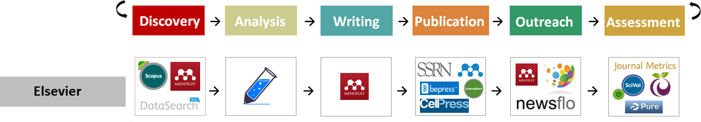
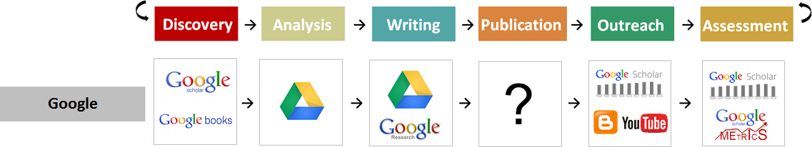
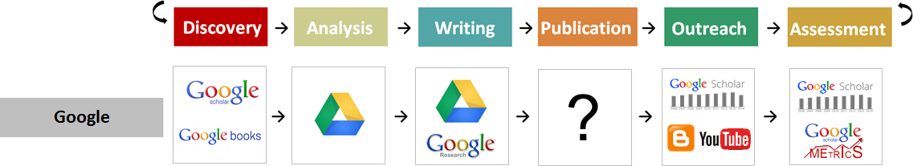

COS goes FOSS (Open Science @COS)
– part I –
What is FOSS, why it matters and what can we do about it
Centre for Organismal Studies, Heidelberg University
@jekely@biologists.social

Workflow Oligopoly – Publishing
  

- tools to cover the entire academic workflow
- e.g. Elsevier can now cover the entire workflow
- high risk of vendor lock-in
- common standard is missing
- re-selling user data (surveillance capitalism)
- about $10 billion/year from public money for science goes to profit
New Windows - a ‘Privacy Nightmare’

- MS marketing: “Your data stays in Europe.”
- MS Legal Director (under oath, in French Parliament):
“No, I cannot guarantee that.”
- Microsoft rolls out AI screenshot tool dubbed ‘privacy nightmare’
- screenshot of your desktop every three seconds
- Recall will be rolled out worldwide
- Information about other people, who cannot consent, will be captured and processed through Recall
- e.g. disappearing messages in Signal etc.
- huge privacy concerns in case of security breach
We are locked in…

- vendor lock-in, oligopoly, non-disclosure clauses
- update ratchet
- prestige fallacy (aka journal rank fallacy)
- data exploitation, surveillance
Open software, open hardware – my laptop

- 2x48 GiB RAM
- 4 TB storage
- 22 cores CPU (Intel® Core™ Ultra 7 155H)
- 4 exchangeable expansion cards (USB-C, HDMI, MicroSD, SD, storage …)
- repairable, upgradable (comes with screwdriver)
- price: ~2,400 EUR
- similar configuration from Apple: ~6,000 EUR
- runs Linux Ubuntu 25 and lots of FOSS